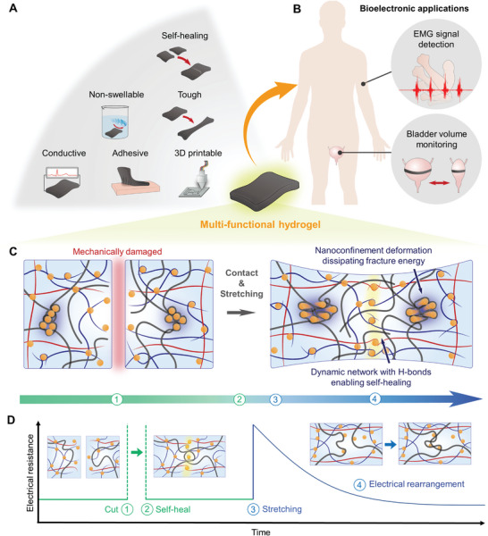

Research context and placement
Nanoconfinement couples swelling control, mechanics and conductivity in a tissue-contacting hydrogel. Tissue-adaptive mechanics is the primary theme; electrical transport and adhesion are cross-cutting aspects.
Research background
Soft hydrogels can swell or lose conductive paths under deformation. This study addresses trade-offs among softness, toughness and recovery. Water-driven dimensional change can alter tissue contact and electrical pathways as well as mechanics. Swelling resistance is consequently a condition for maintaining function in wet environments, not an unrelated extra property.
Approach and advances
Dynamic CNT/TA nanoconfinement dissipates energy. Network reorganization links mechanics and conduction, while adhesion additionally requires surface treatment. Combining localized energy-dissipating regions with a reorganizable network differs from uniformly stiffening the material. It explains the design’s attempt to preserve compliance while accommodating damage, not unlimited independent retention of every function.

Concept of a dynamic nanoconfinement network supporting mechanical recovery and electrical continuity in a hydrogel.
Jae Park, Ju Yeon Kim, Jeong Hyun Heo et al.. “Intrinsically Nonswellable Multifunctional Hydrogel with Dynamic Nanoconfinement Networks for Robust Tissue‐Adaptable Bioelectronics”. Figure 1. DOI: 10.1002/advs.202207237. CC BY 4.0. Public original image copied byte-for-byte, with no resizing, cropping, annotations or re-encoding.
Source figure and caption ↗ · DOI: 10.1002/advs.202207237 ↗ · CC BY 4.0 ↗
Evaluation and conditions
Applications use an artificially filled ex vivo porcine bladder and skin EMG. Neither is a chronic organ-implantation study. Bladder filling/draining tests resistance-based shape monitoring. Skin EMG tests electrical signal pickup through contact with the body; these applications use the same material but validate different functions.
Key findings
Resistance changes with bladder deformation and underwater recording demonstrate application routes. They do not validate molecular detection or clinical monitoring. Underwater EMG supports signal pickup in a wet contact environment, while the excised bladder supports deformation sensing. Neither demonstration substitutes for chronic tissue-response or calibration studies of an implanted organ sensor.
Limits and open questions
Air drying and excess interfacial water impose different constraints. Hydration, pretreatment and deformation history must be matched. Resistance to swelling does not mean resistance to drying in air. Stating the adhesion treatment and water state avoids attributing the complete interfacial performance to the bulk material alone.
Related external research
Electrical bioadhesive interface for bioelectronics
DOI: 10.1038/s41563-020-00814-2 ↗
The publisher abstract describes a thin graphene composite adhesive for electrical recording and stimulation, contrasting an interface-layer strategy with #66's bulk multifunctional hydrogel.
Only the external abstract was reviewed. Thickness, electrical contacts and biological models prevent ranking by conductivity alone.
Abstract checkedCorresponding-author verification
Jungmok Seo: corresponding authorThis record concerns Jungmok Seo’s correspondence designation. Author order or an asterisk alone is not treated as confirmation; this check is separate from verification of the research content.
- Correspondence evidence source ↗
Corresponding author.
contrib/name Jungmok Seo → xref _fncrsp93pmc__; author-notes · public_repository_xml_author_and_correspondence_read
- Main-text review scope
- §2.1 network design §2.2 mechanical durability; selected discussion §2.3 electrical behavior; previously verified publisher body §2.4 adhesion; previously verified publisher body §2.5 bioelectronic applications; bladder and EMG discussion §3 Conclusion Methods: Bioelectronic Applications
- Supplementary review scope
- Supplementary information was not read. No supplementary material is listed as reviewed, and a complete SI audit is not claimed.
- Pending verification
- SI and reproducible adhesion-pretreatment protocols were not audited. Chronic implantation and molecular-sensing performance are not established; the account is limited to the read material, ex vivo bladder and skin-EMG conditions.
COVERAGE & OUTREACH
Coverage and outreach
Links are checked for their relationship to this paper. Media publication does not establish independent reporting or additional experimental validation.
국내 연구진, 신체에 안정적으로 부착 가능한 하이드로겔 소재 개발 ↗
The named team, journal, tannic-acid nanoconfinement and underwater EMG/bladder demonstrations identify #66.
Body read Read the body and publication date. The report relays Yonsei's announcement; it is not independent validation of clinical performance.
BLISS 박재규 학생 Advanced Science에 논문 게재 ↗
The named author/journal and image showing TA/CNT nanoconfinement, EMG and bladder applications identify #66.
Body read Read the public news JSON title/date and its linked image content (entry: ytlee-contest-2-2-2-2-2-2-2-2-2-2-2-2-2-2-2-2). Lab self-promotion; artwork is not redistributed.
Sources and verification scope
§2.1 network design §2.2 mechanical durability; selected discussion §2.3 electrical behavior; previously verified publisher body §2.4 adhesion; previously verified publisher body §2.5 bioelectronic applications; bladder and EMG discussion §3 Conclusion Methods: Bioelectronic Applications
The additional commentary is editorially approved within the stated evidence scope. This does not imply complete verification of all main-text and supplementary material.
- Additional main-text review scope
- §2.1 network design §2.2 mechanical durability; selected discussion §2.3 electrical behavior; previously verified publisher body §2.4 adhesion; previously verified publisher body §2.5 bioelectronic applications; bladder and EMG discussion §3 Conclusion Methods: Bioelectronic Applications
- Additional supplementary review scope
- Supplementary information was not read. No supplementary material is listed as reviewed, and a complete SI audit is not claimed.
- Public publication baseline ↗ · #66 · 2026-10-03
- Crossref metadata ↗: Only public bibliographic metadata registered with Crossref was checked. This does not mean that the publisher page, abstract, or full text was read; full-text verification in the school Chrome session remains pending. license_urls lists registered links and does not establish permission to redistribute text or figures. It may include TDM or posting-policy links.
- Advanced Science — publisher article ↗
Public full text; checked 2026-10-03 · Abstract; §2.1 design; §2.2 mechanical durability (air drying); §2.3 electrical properties; §2.4 adhesion (excess surface water); §2.5 applications; §3 conclusion - Intrinsically Nonswellable Multifunctional Hydrogel with Dynamic Nanoconfinement Networks for Robust Tissue‐Adaptable Bioelectronics ↗
selected_main_text_read · Introduction; §3 Conclusion - Intrinsically Nonswellable Multifunctional Hydrogel with Dynamic Nanoconfinement Networks for Robust Tissue‐Adaptable Bioelectronics ↗
selected_main_text_read · §2.1; §3 Conclusion, confined/nonconfined regions - Intrinsically Nonswellable Multifunctional Hydrogel with Dynamic Nanoconfinement Networks for Robust Tissue‐Adaptable Bioelectronics ↗
selected_main_text_read · §2.5; Methods: Bioelectronic Applications - Intrinsically Nonswellable Multifunctional Hydrogel with Dynamic Nanoconfinement Networks for Robust Tissue‐Adaptable Bioelectronics ↗
selected_main_text_read · §2.5, artificial bladder and dry/underwater EMG; Figure 6E–J - Intrinsically Nonswellable Multifunctional Hydrogel with Dynamic Nanoconfinement Networks for Robust Tissue‐Adaptable Bioelectronics ↗
selected_main_text_read · §2.5 model description; §3 future electrochemical biomolecule detection; editorial inference for chronic implantation - Intrinsically Nonswellable Multifunctional Hydrogel with Dynamic Nanoconfinement Networks for Robust Tissue‐Adaptable Bioelectronics ↗
independent_reviewer_selected_main_text · §2.2 selected water-loss paragraph; tissue interface/NHS and excess-water removal; §2.5 application and Conclusion. - Additional commentary source ↗
Research background · Introduction; §3 Conclusion - Additional commentary source ↗
Approach and advances · §2.1; §3 Conclusion, confined/nonconfined regions - Additional commentary source ↗
Evaluation and conditions · §2.5; Methods: Bioelectronic Applications - Additional commentary source ↗
Key findings · §2.5, artificial bladder and dry/underwater EMG; Figure 6E–J - Additional commentary source ↗
Limits and open questions · §2.5 model description; §3 future electrochemical biomolecule detection; editorial inference for chronic implantation - Additional commentary source ↗
Connections to related work · Electrical bioadhesive interface for bioelectronics; DOI 10.1038/s41563-020-00814-2; publisher abstract previously read; Europe PMC REST core abstractText and title/DOI/author metadata rechecked 2026-10-03; external full text not reviewed. · public_abstract_rechecked_via_EuropePMC_API